May mắn cho anh là được gặp em, làm quen và yêu em
Trải qua rất nhiều chuyện cuối cùng chúng mình cũng đến được với nhau
Hạnh phúc của anh đơn giản là yêu và được yêu em
09-03-2023
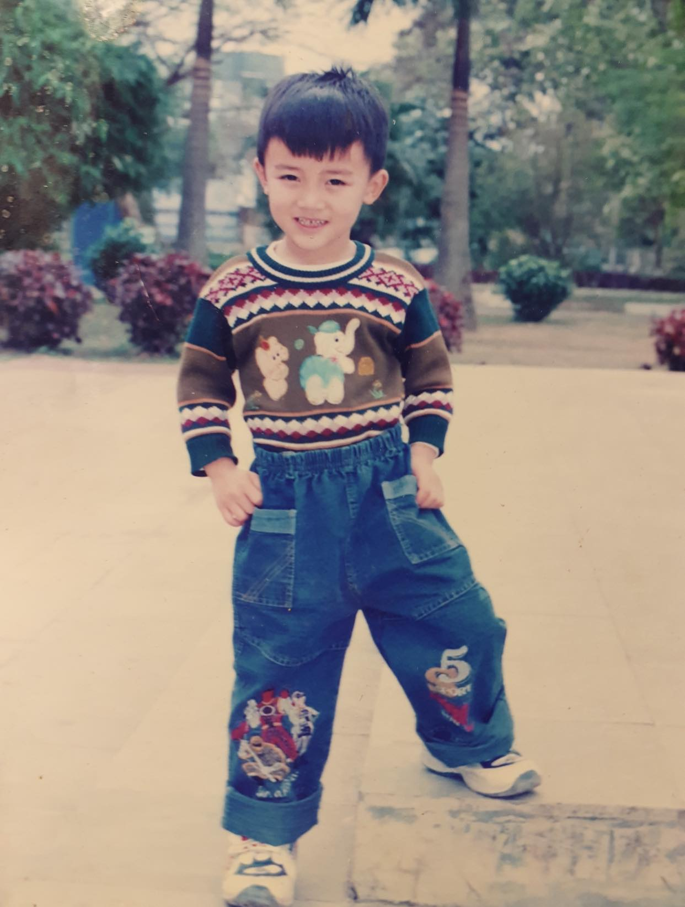
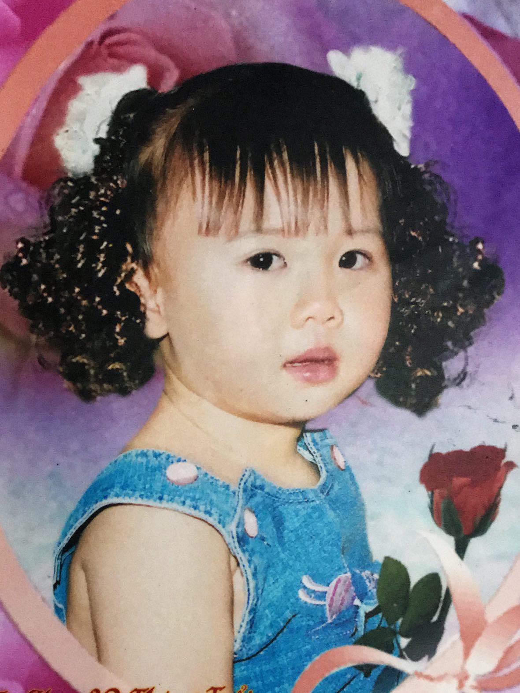
Hành trình yêu nhau của chúng mình
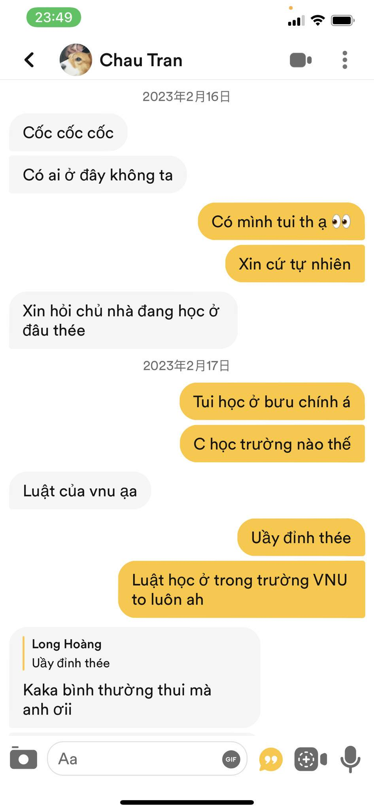
Là ngày tui quẹt Bumble trúng vợ iu cụa tui.
Lúc đâù đọc cái profile của vợ tui, tui đã nghĩ là người vừa khó tính vừa cầu toàn như này chắc là mình không có cửa rồi.
Nhưng mà tui vẫn mạnh dạn quẹt phải và nghĩ rằng là chắc là người ta hong quẹt lại đou.
Nhưng cúi cùng tui cũng đã được vợ tui quẹt phải và còn nhắn tin trước nữa chứ.
Tui không tin vào mắt mình lun và còn sướng quá trời quá đất lun.
Sau đó là chuỗi ngày trò chuyện không bít mệt mỏi cụa tui với vợ từ Bumble, rùi chuyển qua IG và cúi cùng là FB
Ngày 16 tháng 02 năm 2023
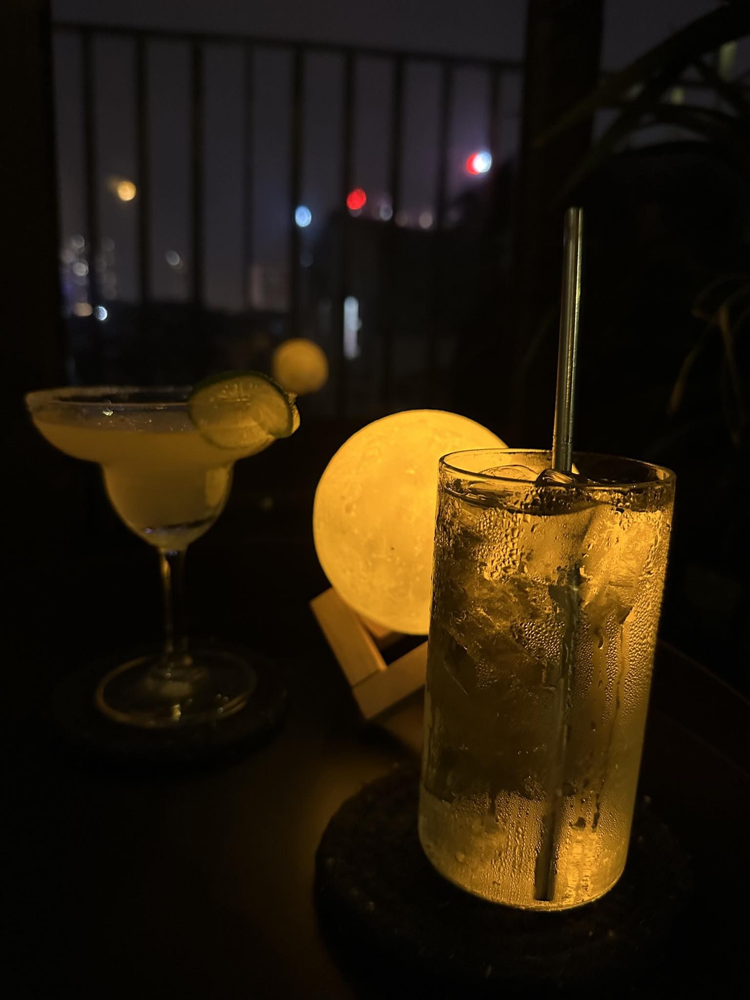
Sau những ngày trò chuyện với nhau, lúc này 2 đứa cũng đã có cảm tình với nhau.
Cúi cùng chúng mình đã có buổi date đầu tiên. Anh vui và mong chờ lắm.
Hôm đó anh đã chuẩn bị quà và tắm gội thật sớm để qua đón vợ iu.
Lần đầu tiên được nhìn thấy vợ iu ngoài đời thật và thấy là thật sự xinh hơn trong ảnh rất rất nhiều (suýt ngất).
Sau đó chúng mình đi ăn Ramen rồi đi Ngạc ún cocktail. Tại Ngạc lần đầu tiên tui được chơm vợ iu.
Thật sự cảm xúc lúc đó rất khó tả vừa ngại ngùng vừa thích như lâng lâng trên 9 tầng mây vậy.
Lúc đầu còn hong dám thơm vợ iu còn phại để vợ iu gợi ý nứa. Hôm đó anh chỉ mong thời gian kéo dài lâu thật lâu để anh được bên cạnh vợ iu thui.
Ngày 28 tháng 02 năm 2023
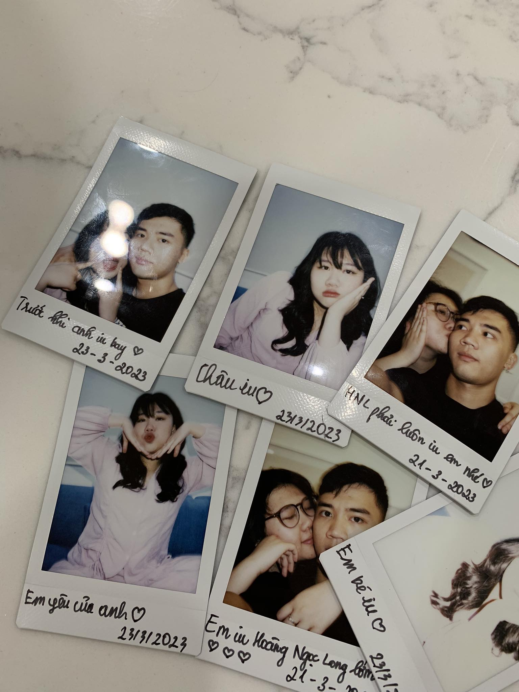
Đây là buổi date thứ 2 của hai đứa. Hôm đó 2 đứa đi xem phim Siêu Lừa Gặp Siêu lầy ở Royal City.
Vừa chem phim còn vừa chơm nhao nứa chứ hihi. Xong lúc về 2 đứa có ngồi nói chuyện, tâm sự với nhau rất lâu dưới chân chung cư.
Hai đứa nói với nhau đủ thứ chuyện như bạn bè, học hành,...
Vợ iu lúc này nói đã tin tưởng mình và muốn 2 đứa bước vào mối quan hệ chính thức, nhưng mà vợ iu nói muốn mình suy nghĩ thật kĩ trước khi trả lời.
Chỉ tiếc là hôm đó 2 đứa hong chụp với nhau kiểu ảnh nào.
Ngày 06 tháng 03 năm 2023
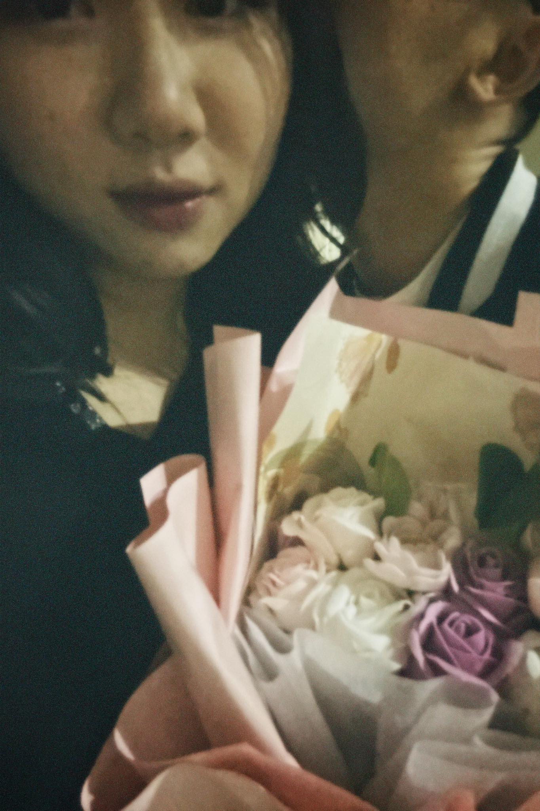
Buổi date thứ 3 của 2 đứa và cũng là khi 2 đứa bước vào mối quan hệ chính thức làm người yêu cụa nhao.
Hum đó là ngày 08/03 nên tui đã chuẩn bị 1 bó hoa để tặng vợ iu.
Hum đó 2 đứa đã đi ăng Gogi ở trên Tràng Tiền Plaza rùi đi ún cafe ở Tống Duy Tân.
Đến hơn 23h phại đựa vợ zề để chụp ảnh cùng bó hoa mình tặng cho đúng ngày 08/03 hehe.
Sau đó 2 đứa đã ngồi nói chuyện với nhau rất lâu, bày tỏ hết những suy nghĩ với nhau.
Rùi anh có nói là anh rất trân trọng tình cảm này và muốn 2 đứa có một mối quan hệ chính thức với nhau.
Anh đã ngỏ lời làm người yêu vợ và đã được vợ iu đồng ý. Hôm đó là một trong những ngày hạnh phúc nhất đời anh
Ngày 08-09 tháng 03 năm 2023
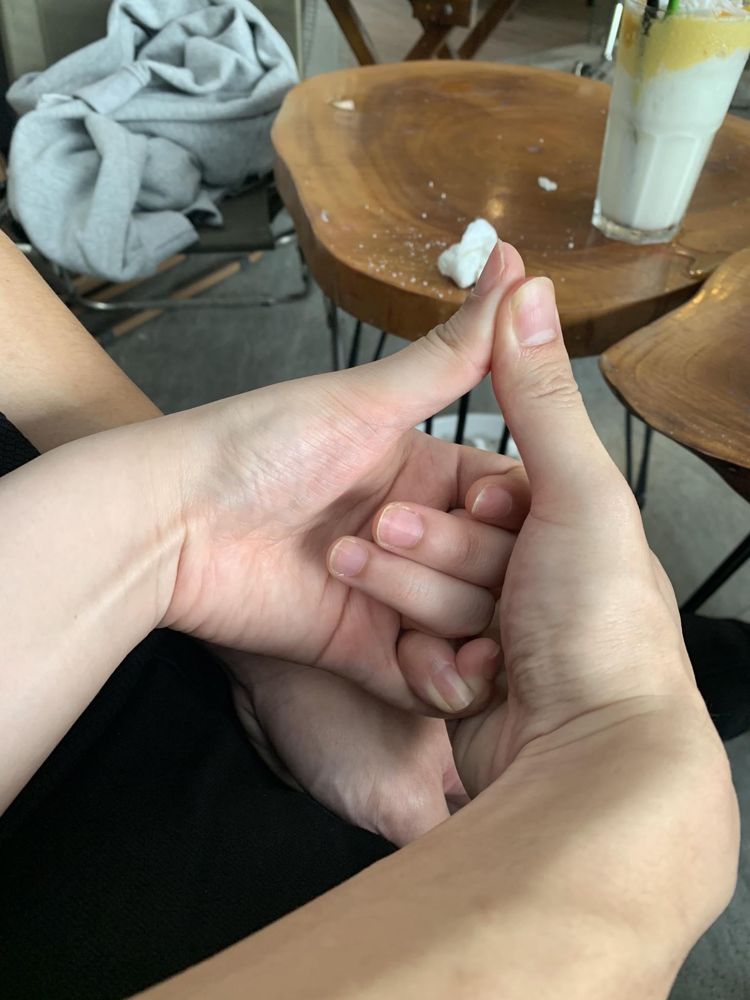
Buối date chính thức của 2 đứa sau khi chính thức yêu nhau. Anh vẫn nhớ hôm đó là một buổi chiều CN đẹp trời.
Hôm đó anh đã đón vợ đi ăn bún r iêu ở Ba Đình, rùi sau đó 2 đưa đi ún cafe ở Hồ Tây và đục hóa thạch nứa.
Chính lúc đó anh cũng báo với vợ iu là anh phải vào trong Nam học. Vợ iu đã rất shock khi nghe được tin này.
Vợ iu đã khóc ngay tại quán, nhìn vợ iu khóc mà anh cũng không kìn nén nổi cảm xúc của mình mà cũng rơm rớm.
Hai đứa đã nói với nhau rất nhiều chuyện và đã hứa là sẽ cùng nhau cố gắng để vượt qua được khoảng thời gian khó khăn này.
Sau đó 2 đứa đã đi đạp vịp rồi còn ăn kem cùng nhau nữa. Khi về 2 đứa còn đi bộ với nhau 1 lúc lâu chụp được rất nhìu ảnh nữa.
Sau khi đã về nhà vợ lại không kìm được cảm xúc mà khóc típ. Anh đã qua nhà và dỗ dành vợ iu, 2 đứa đã nói với nhau rất nhiều
về chuyện đi học cụa anh sau này. Anh biết vợ không thích những lời hứa hẹn những anh đã xin phép vợ cho anh hứa 3 lời hứa đầu tiên và duy nhất
3 lời hứa mà anh nhất định sẽ phải thực hiện được!
Ngày 12 tháng 03 năm 2023
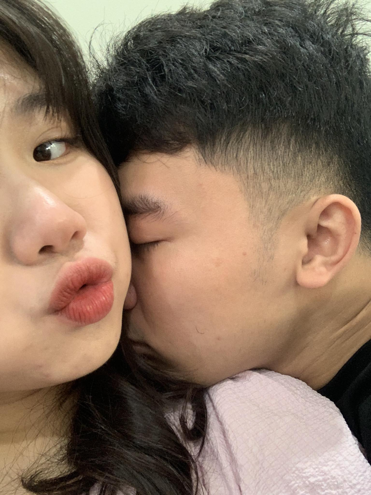
Sau bao ngày 2 đứa bám nhau, làm gì cũng có nhau từ ăn ngủ nghỉ, đến việc học. Anh vẫn nhớ như in những buổi nấu cơm cùng nhau của 2 đứa,
hay những lần đứa đón vợ iu đi học với còn đường Phạm Hùng quen thuộc. Cuối cùng cũng đến ngày anh phải bay vào Nam.
Hôm đó là một ngày thật đặc biệt. Hai đứa bám nhau cả buổi, cùng nhau ăn trưa, rồi còn viết cam kết với nhau nứa và còn chụp với nhau rất nhiều ảnh nứa.
Khi vợ bước ra với bộ váy hôm first date vợ iu mặc, anh đã shock không nói nên lời. Sao tui lại lại có 1 cô người yêu xinh đẹp tuyệt vời như này chứ.
Hai đứa chụp ảnh rồi nói với nhau rất nhiều thứ, vừa khóc nhè vừa thủ thỉ với nhau. Rồi cuối cùng cũng đến giờ anh phải về sắp xếp đồ để bay.
Lúc xuống hầm lấy xe ra về tui cứ cố gắng nán lại để nhìn mãi hình bóng của vợ. Về nhà vừa xếp đồ vừa òa lên khóc thui.
Hum đó vợ iu đã nhắn dặn dò anh rất nhiều thứ, đến bây giờ anh vãn nhớ. Ngày hôm đó là ngày anh không thể quên
Ngày 23 tháng 03 năm 2023
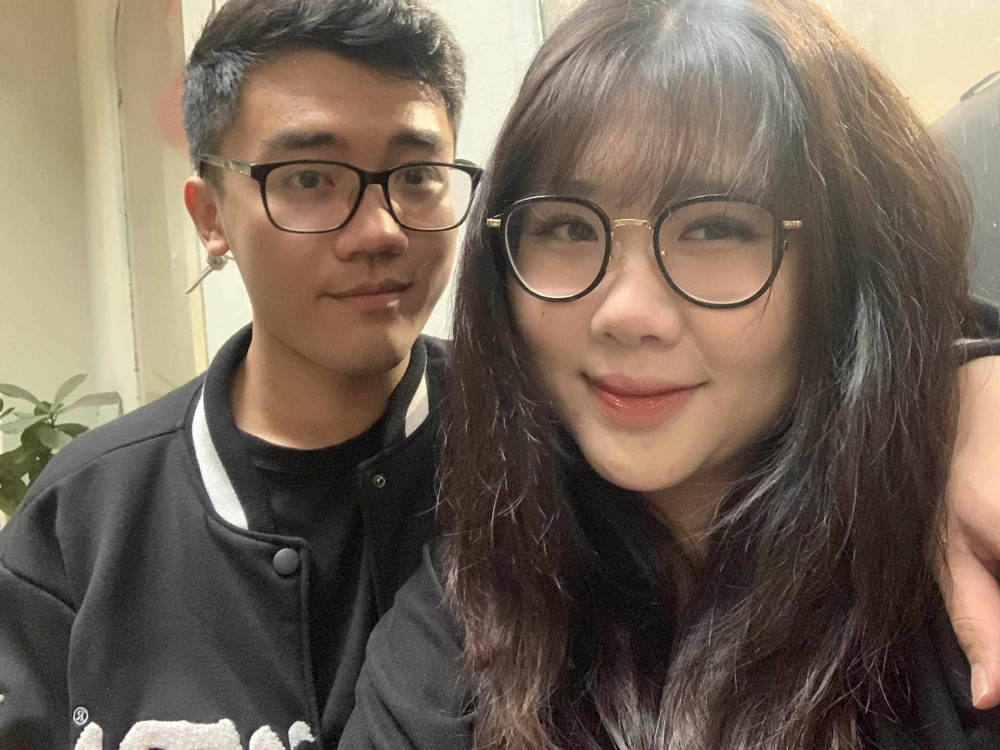
Sau những ngày ăn cưới anh 2, tui cũng được về Bắc để thi bằng lái. Hong gì có thể vui hơn lúc đó, ngay ngày hôm sau
tui đã qua gặp lại vợ iu, 2 đứa ôm nhau mừng ríu rít. Sau đó là chuỗi ngày 2 đứa làm gì cũng có nhau, cùng nhau sinh hoạt, nấu ăn,
tui còn được đứa đón vợ tui đi học và đi chơi nữa. Hai đứa đã có nhiều kỉ niệm đẹp cùng nhau. Những ngày đó là những ngày anh rất hạnh phúc
mà anh không bao giờ quên
Ngày 28 tháng 03 năm 2023
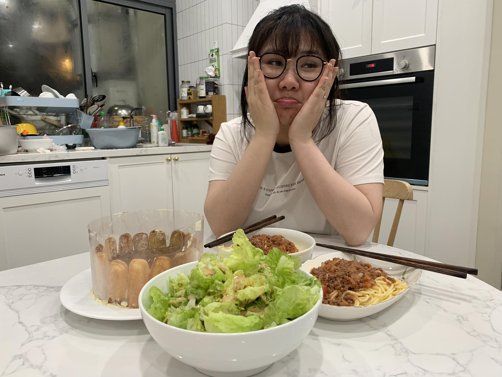
Sau những ngày bám nhau thì anh cũng đã thi xong bằng lái và phải trở lại Nam để học.
Hai đứa lại phải bịn dịn tạm biệt và tạm thời xa nhau. Anh buồn lắm, nhưng anh luôn có vợ iu làm động lực siu to khổng lồ
để cố gắng không ngừng nghỉ.
Ngày 11 tháng 4 năm 2023
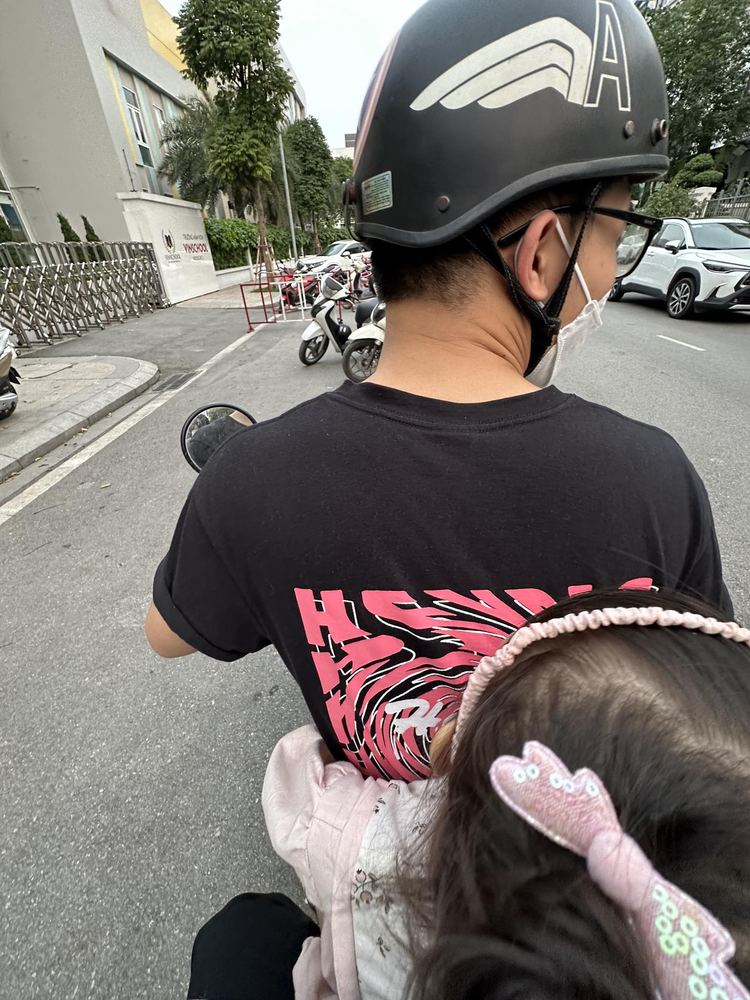
Sau hơn 1 tháng buồn tủi xa nhau thì cuối cùng anh cũng được về với vợ iu vài ngày. Anh vui và mong chờ lắm.
Rùi ngày ấy cũng đến, anh bay về với vợ iu. Hai đứa gặp lại nhau mừng ríu. Rùi sau đó là chuỗi ngày 2 đứa
sinh hoạt và đi chơi cùng nhau. Năm ngày ngắn ngủi trôi nhanh, anh lại phải quay trở lại tp HCM để hoàn thành việc học.
Ngày 18 tháng 15 năm 2023
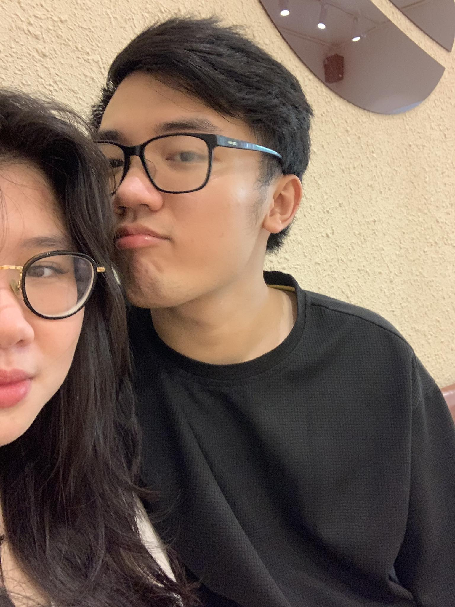
Buổi đi chơi đầu tiên của 2 đứa khi vợ iu vào tp HCM. Anh qua nhà dì vợ đón vợ iu đi chơi.
Đầu tiên là 2 đứa đi ăn cơm tấm Ba Nghiền rùi đi ún cafe. Sau đó 2 đứa đã đi Thảo Cầm Viên với nhao và cúi cùng là hai đứa đi xem phim.
Hôm đó anh vui lắm, lâu rồi 2 đứa mới được đi chơi với nhau. Buổi đi chơi thứ 2 thì 2 đứa chỉ ở homestay ấp nhao thui hihi.
Ngày 09-11 tháng 07 năm 2023
Một vài lời nhắn nhủ của anh với vợ iu
Như anh đã nói, gặp được em, được làm quen và được yêu em là một trong những điều may mắn nhất đời anh. Anh rất trân trọng mối quan hệ của hai đứa
và anh mong chuyện của chúng mình có được một cái kết thật đẹp. Chúng mình đã cùng nhau trải qua một chặng đường dài
vui có, buồn có, những bất đồng đã xảy ra. Nhưng cuối cùng 2 đứa vẫn bên nhau, cùng giúp nhau trở nên tốt hơn và hiểu nhau nhiều hơn. Phía trước chúng mình vẫn còn
một chặng đường dài đã chờ phía trước, một chặng đường mà nhiều khó khăn và thử thách với 2 đứa. Nhưng anh tin rồi 2 đứa
sẽ cùng nhau vượt qua tất cả. Những khó khăn thử thách sẽ chỉ làm chúng mình hiểu nhau hơn, trân trọng tình cảm này hơn.
Hai đứa chúng mình hãy cùng nhau cố gắng vợ nhé. Anh biết thời gian gần đây có nhiều chuyện xảy ra và vợ đã bị stress rất nhiều.
Anh hiểu và thương yêu vợ nhiều lắm. Vợ hãy nhớ là anh luôn ở bên cạnh vợ, sẵn sàng giúp đỡ và chia với ạ. Suy nghĩ duy nhất
của anh chỉ là mong sao làm mọi cách để giúp vợ trở nên tốt hơn thui, nên là vợ hong bao giờ được nghĩ là làm phiền hay ảnh hưởng
tiêu cực tới anh đâu nhé. Anh luôn cầu mong mọi điều tốt đẹp nhất luôn đến với vợ iu. Dù có chuyện gì vợ iu hãy chia sẻ với anh nhé ạ,
anh năn nỉ vợ iu lun đó ạ.
Qua những lần như này 2 hai đứa lại trở nên hiểu nhau hơn, yêu nhau hơn và càng trân trọng mối quan hệ
này hơn. Tui yêu vợ Châu iu cụa tui nhắm, nên là tui sẽ làm mọi cách bằng mọi giá để giữ được mối quan hệ này ạ.
Anh sẽ cố gắng nhiều thật nhiều để về với vợ nhanh nhất có thể nhé ạ. Vợ iu đợi anh về nhé. Anh cũng sẽ cố gắng
trở nên tốt hơn nữa để vợ hong phại buồn lòng nhé ạ. Anh siu siu nhớ vợ Châu iu cụa anh ạaaaaaaaaaaa.
Anh thương vợ Châu iu cụa anh nhắm nhắmmmmmmmmmmm. Anh yêu vợ Châu iu xinh đẹp tuyệt vời cụa anh nhứt trên đời ạaaaaaaaaaaaaaaaaa <3

{kind=link}
{kind=link}
{kind=link}
{kind=link}
{kind=link}
{kind=link}
{kind=link}
{kind=link}
{kind=link}